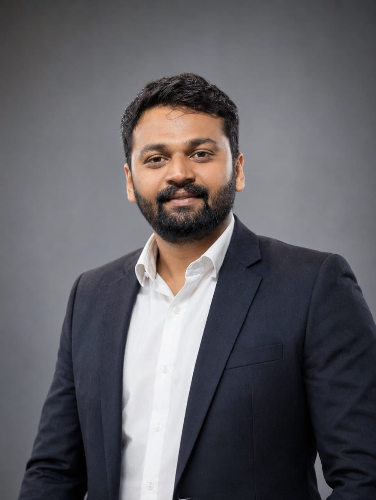

Program & acceleration leadership
Proven track record managing large-scale incubation programs and flagship government initiatives, including M2M and Startup Srujan.
i-Hub Gujarat — A Government of Gujarat Enterprise
Acceleration Manager · Startup Ecosystem Enabler · Mentor
"Reinventing conducive ecosystems for the next generation of entrepreneurs."

About
Parag Solanki is a results-oriented Startup Ecosystem Enabler with over five years of dedicated experience in fostering innovation and supporting growth-stage companies. As Acceleration Manager at i-Hub Gujarat, he draws on a deep understanding of the startup lifecycle — from pre-incubation to scaling — to drive high-impact initiatives across the state, spearheading incubation and acceleration support for Semiconductor, ICT, Deep Tech, FinTech, Cybersecurity, and modern-commerce startups.
Key expertise & impact
Proven track record managing large-scale incubation programs and flagship government initiatives, including M2M and Startup Srujan.
Successfully guided 80+ startups and innovators, providing the resources and mentorship needed to launch and scale.
Coordinated the filing of over 1,800 IPRs/patents, with over 45% granted; personally holds three published patents.
Bridges industry and academia and secures vital funding through strategic partnerships and government schemes.
Experience
Feb 2026 — Present · Ahmedabad
Spearheading incubation and acceleration for Semiconductor, ICT, Deep Tech, FinTech, Cybersecurity, and modern-commerce startups. Managing flagship programs including M2M and Startup Srujan. Coordinating 1,800+ IPR and patent filings.
Feb 2023 — Jan 2026 · Rajkot
Supported startups, innovation programs, IPR awareness, industry collaboration, and university-led entrepreneurship ecosystem development.
Education & credentials
Portfolio & programs
Flagship acceleration initiative managed at i-Hub Gujarat.
Statewide innovation and incubation program.
Semiconductor · ICT · Deep Tech · FinTech · Cybersecurity · Modern Commerce
1,800+ filings coordinated, 45%+ grant rate, 3 personally held published patents.
“Passionate about nation-building and youth development, Parag continues to set new benchmarks for the Gujarat startup ecosystem through strategic partnerships and relentless support for the next generation of innovators.”